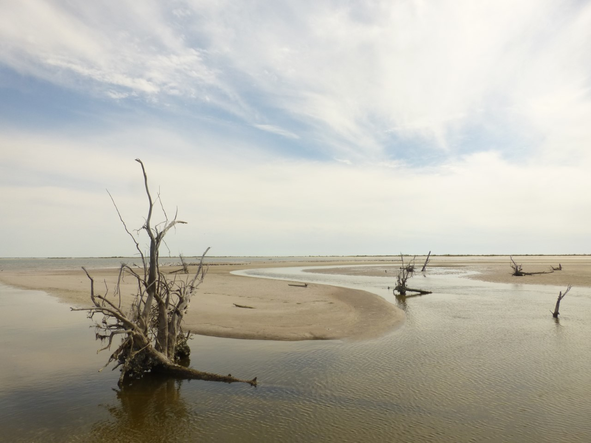

Boneyard by Carmella de los Angeles Guiol
A Miami native and a graduate of Amherst College, Carmella de los Angeles Guiol is currently pursuing a Masters in Fine Arts in Creative Writing at the University of South Florida. Her writing and/or photography has appeared in The Toast, The Normal School, Thought Catalog, The Fourth River, and elsewhere. You can often find her in the garden or kayaking the Hillsborough River, but you can always find her at www.therestlesswriter.com.
Issue 01
Fiction:
Poetry:
- "In the Painter’s House" by Hannah Dela Cruz Abrams
- "Jabuticaba Fruit Tree" by Caroline Barr
- "Venus de Milo with Drawers to Her Lover" by Caroline Barr
- "Blank" by Caroline Barr
- "Ode to Pablo Picasso" by Daniel Ruiz
- "Under the Threat of Eden" by Emma Bolden
- "The Parable of the Wayward Child" by Shara McCallum
- "Sonnet for Snapper Creek" by Maureen Seaton
- AWP Haiku #AWPoem Winner: M.M. DeVoe